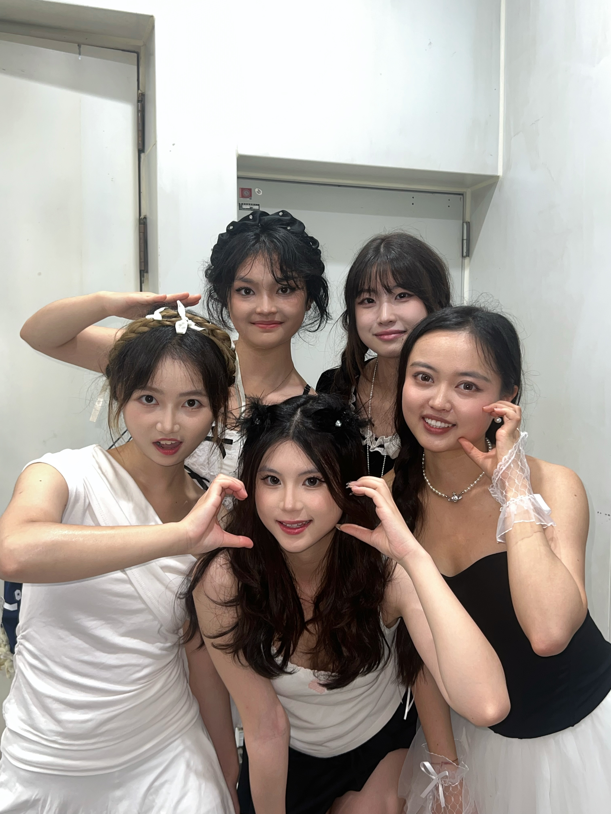

Dancing is one of the activities that I enjoy the most outside of my academic life. While my major focuses on Data Science, Business, and Financial Technology, dancing gives me a different way to express myself and relax from studying. In my free time and during school vacations, I like to practice dancing on my own. I usually learn choreography from online videos and spend time repeating movements so that I can improve my rhythm, coordination, and confidence. My favorite dance styles are jazz dance and K-pop dance. I enjoy these styles because they are energetic, expressive, and full of personality. Jazz dance allows me to focus on body control, musicality, and emotion, while K-pop dance often includes strong, exciting, and well-structured choreography. Practicing these dance styles helps me stay active and also gives me a creative outlet outside of academics. In addition to practicing by myself, I have also participated in some performances in shopping malls and public spaces. These experiences are very meaningful to me because performing in front of an audience is both exciting and challenging. It allows me to share something I love with other people and enjoy the energy of performing on stage. For me, dancing is more than just a hobby. It helps me relieve stress, stay motivated, and maintain a healthy balance between school and personal interests. No matter how busy life becomes, dance will always remain an important part of who I am.